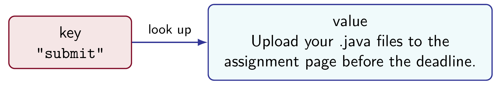
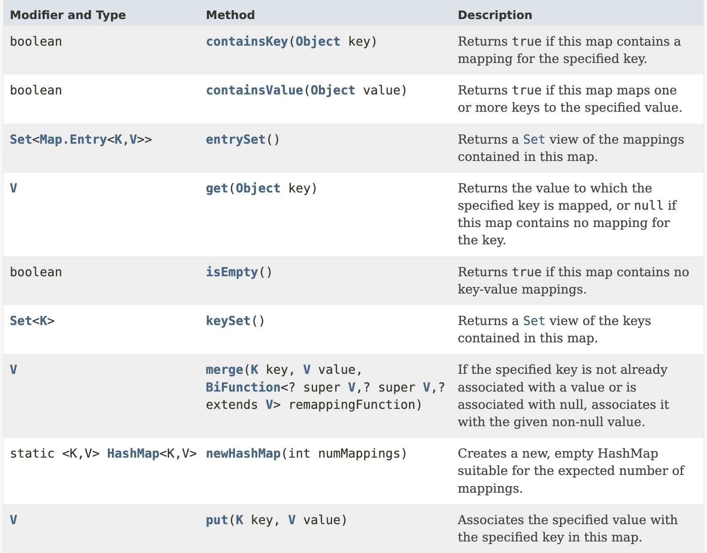
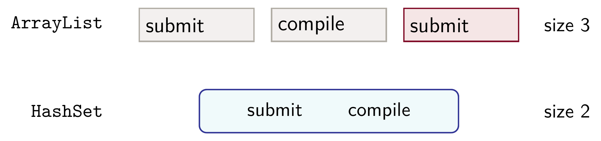
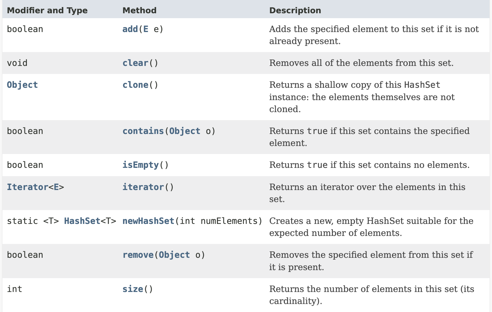
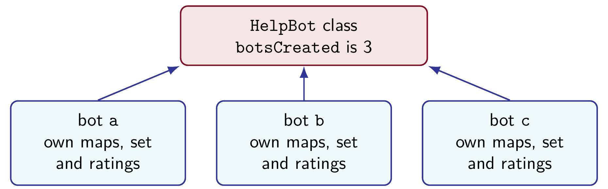

Lecture 11 Workbook
This workbook holds the notes and the questions for Lecture 11. Each section starts with notes that explain everything on the slides, and a little more. Answer the questions as we discuss the slides. Sections 4 and 8 are the QEII Library coding parts, for you to do at home as practice. Section 10 has two complete programs to write after class, and the lecture summary at the end is a short review for tests. By the end, you should be able to:
- store and look up values by key in a
HashMap, and handle a missing key; - count things with a map and the
getOrDefaultpattern; - keep distinct values in a
HashSet; - choose a list, a set or a map for a job;
- use
staticfields, constants and methods, and say how they differ from instance members; - explain what
finaldoes to a field and to a reference; and - explain why
mainis a class method.
1. Maps
The help desk bot
At the end of Lecture 10, HelpBot cleans a question with trim and toLowerCase, refuses an empty one, and picks one of four general replies at random. It also keeps ratings. Its replies never depend on the words in the question: a student who asks how to submit work gets the same kind of reply as a student who asks about the weather.
In this lecture the bot learns four keywords. A question that contains a keyword gets that keyword's own reply. The bot also counts how often each keyword comes up and records which topics have been asked about. The examples always use the same four keywords and replies:
| Keyword | Reply |
|---|---|
submit | Upload your .java files to the assignment page before the deadline. |
compile | Read the first error message and check the line just above it. |
late | Late work loses 10 percent per day. |
test | Term Test 2 covers Chapters 1 to 9 and 12 to 13, mostly 6 to 9 and 12 to 13. |
Questions passed to the bot are never null. Unless a question says otherwise, each one starts with a new bot.
Keys and values
A map is a collection of entries. Each entry pairs a key with a value. We give the map a key and it gives back the value stored with that key. A phone's contact list is a map: we look up a name and get a phone number. In HelpBot, the key is a keyword such as "submit" and the value is the reply.
In a list we find an element by its position. In a map we find a value by its key, and we never need to know where the entry is kept. Each key appears at most once in a map.
Creating a map
The class we use is java.util.HashMap. It has two type parameters: HashMap<K, V> stores keys of type K and values of type V. In HelpBot both are String:
import java.util.HashMap;
// A field of HelpBot:
private HashMap<String, String> replyMap;
// In the constructor:
replyMap = new HashMap<>();The two types do not have to match. As with ArrayList, a type argument must be a class, so a map whose values are whole numbers uses the wrapper class Integer. The diamond <> takes its types from the declaration.
Storing and reading an entry
Three methods do most of the work:
put(key, value)stores an entry;get(key)returns the value stored with the key;size()returns the number of entries.
The constructor calls a private helper, fillReplyMap, that makes four put calls, one for each row of the table above. After that, replyMap.size() is 4, and HelpBot's method numberOfKeywords() returns replyMap.size(). The length of a reply makes no difference: each key and its value are one entry.
Because a key can appear only once, put with a key that is already in the map replaces that key's value. The size stays the same. HelpBot has a method that does this:
public void learn(String keyword, String reply)
{
replyMap.put(keyword, reply);
}After bot.learn("submit", "Use the upload page."), the key submit has the new reply and the map still has 4 entries. A call with a new keyword adds an entry.
Missing keys
When no entry has the key, get returns null. Printing null is harmless, but calling a method through it stops the program with a NullPointerException:
String reply = replyMap.get("room");
if(reply != null) {
System.out.println(reply.length());
}
else {
System.out.println("Unknown keyword");
}This prints Unknown keyword. The same exception happens when Java has to unbox a null Integer into an int. Two more methods help with missing keys. containsKey(key) returns true if the key has an entry. getOrDefault(key, fallback) returns the stored value, or fallback when the key has none. Reading a map, with any of these methods, never adds an entry.
HelpBot uses both:
public boolean knows(String keyword)
{
return replyMap.containsKey(keyword);
}
public String replyFor(String keyword)
{
return replyMap.getOrDefault(keyword, UNKNOWN_KEYWORD);
}UNKNOWN_KEYWORD is a constant holding "I do not have an answer for that yet.". Section 6 explains constants.
Visiting the keys
keySet() returns the keys, and a for-each loop visits each one once:
for(String keyword : replyMap.keySet()) {
System.out.println(keyword);
}A HashMap does not keep its entries in the order they were added, and it does not sort them. The loop visits submit, compile, late and test in some order, and a program that uses a HashMap should give the right answer whatever that order is.
Matching a question
Now replyTo can look for a keyword inside the cleaned question:
public String replyTo(String question)
{
String cleaned = clean(question);
if(cleaned.isEmpty()) {
return NO_QUESTION;
}
for(String keyword : replyMap.keySet()) {
if(cleaned.contains(keyword)) {
recordKeyword(keyword);
return replyMap.get(keyword);
}
}
return pickGeneralReply();
}NO_QUESTION is the constant "Please type a question.". The loop returns at the first keyword the question contains, after a call to recordKeyword, which Sections 2 and 3 write. A question with no keyword gets a general reply. Cleaning matters here: "How do I SUBMIT my work?" matches because its cleaned text contains submit.
The bot only looks for text inside text. "Is it too late to ask?" contains late, so it gets the reply about late work, whatever the student meant.
1.1 A class keeps the number of students in each course, with course codes such as "COMP2001" as keys. Write the import, the private field enrolment, and the line in the constructor that creates the map. Why can the value type not be int?
The rest of CourseList is written for you. The checking program enrols 120 students in COMP2001 and asks for COMP2001 and for COMP3754, which has no entry. Its expected output is:
COMP2001: 120 COMP3754: 0
Why can the value type not be int?
1.2 In the reply map, what are the key type and the value type? Could the map have two entries with the key submit? Could two different keys have the same reply?
1.3 Write the five lines this code prints, using the four-entry reply map. Then explain why the fourth line is safe to run, when calling reply.length() on the same result is not.
System.out.println(replyMap.get("test"));
System.out.println(replyMap.size());
System.out.println(replyMap.containsKey("room"));
System.out.println(replyMap.get("room"));
System.out.println(replyMap.getOrDefault("room",
"I do not have an answer for that yet."));| Line | Printed |
|---|---|
| 1 | |
| 2 | |
| 3 | |
| 4 | |
| 5 |
Why is the fourth line safe?
1.4 This code compiles, but it stops with an error when the key is missing. Rewrite it so that it prints the length of the reply when the key has one, and Unknown keyword otherwise. Use containsKey.
String reply = replyMap.get(keyword);
System.out.println(reply.length());The box holds a small class with the four-entry reply map, and the broken code is in its method printLength. The checking program calls printLength("test") and then printLength("room"). Its expected output is:
76 Unknown keyword
Why did the first version stop for a missing key?
1.5 What does this code print? Why did the second learn call not change the number of keywords?
HelpBot bot = new HelpBot();
bot.learn("room", "Ask at the front desk.");
bot.learn("submit", "Use the upload page.");
System.out.println(bot.numberOfKeywords());
System.out.println(bot.replyFor("room"));| Line | Printed |
|---|---|
| 1 | |
| 2 |
Why did the second call not change the number of keywords?
1.6 For each question, say which reply replyTo gives: a keyword reply (name the keyword), the prompt to type a question, or a general reply.
"Can I relate this to Lecture 9?"" ""How do I hand in my work?""Where do I submit a test?"Why can we not tell from the code which reply this one gets?
2. Counts
Counts by keyword
The help desk would like to know which topics come up most often. The bot keeps a second map, from each keyword to the number of questions that matched it:
// A field of HelpBot:
private HashMap<String, Integer> keywordCounts;
// In the constructor:
keywordCounts = new HashMap<>();The value type is Integer, the wrapper class from Lecture 10. This map starts empty, even though the reply map has four entries. A keyword gets an entry here the first time a question matches it.
Updating a count
Adding 1 to a count takes two lines:
int count = keywordCounts.getOrDefault(keyword, 0);
keywordCounts.put(keyword, count + 1);The first line reads the current count. For a keyword with no entry yet, getOrDefault returns 0, so the first match counts as 1. The Integer stored in the map is unboxed into the int variable count. The second line stores the new count: count + 1 is boxed into an Integer, and put replaces the old value.
Changing count alone would not change the map, because count is a local copy of the number. The put is what stores it. These two lines are a pattern worth remembering: they count anything by key, and the library problem uses them in Section 4.
Reading a count
public int timesAsked(String keyword)
{
return keywordCounts.getOrDefault(keyword, 0);
}A keyword that has never matched has no entry, and timesAsked returns 0 for it. Suppose a new bot gets four questions that match submit, compile, submit and then test:
| Question matches | Count after it | Entries in the count map |
|---|---|---|
submit | submit becomes 1 | 1 |
compile | compile becomes 1 | 2 |
submit | submit becomes 2 | 2 |
test | test becomes 1 | 3 |
Afterwards timesAsked("submit") is 2, the counts for compile and test are 1, timesAsked("late") is 0, and the count map has three entries.
2.1 A new bot answers "Is my work late?", "Why will it not compile?", "How late is too late?" and "Can I hand it in late?". Fill in the table. Then say which values change if one more question about late arrives.
| Expression | Value |
|---|---|
timesAsked("late") | |
timesAsked("compile") | |
timesAsked("test") | |
timesAsked("submit") | |
keywordCounts.size() |
Which values change after one more question about late?
recordKeyword2.2 Write the private method recordKeyword(String keyword) so that it adds 1 to the keyword's count in keywordCounts. Then answer: a student writes keywordCounts.get(keyword) + 1 instead of using getOrDefault. What happens the first time a keyword is recorded?
The box holds a small class with only the count map. Its public method ask calls recordKeyword. The checking program asks late, compile and late. Its expected output is:
late: 2 compile: 1 test: 0 Keywords counted: 2
What happens with get(keyword) + 1 the first time?
3. Sets
Distinct topics
The bot also records which topics have been asked about, without caring how often. A set is a collection that holds each element at most once. The class we use is java.util.HashSet:
import java.util.HashSet;
// A field of HelpBot:
private HashSet<String> topicsAsked;
// In the constructor:
topicsAsked = new HashSet<>();Set operations
add(element)adds the element and returnstrue. If the element is already there, nothing changes andaddreturnsfalse.contains(element)returnstrueif the element is in the set.remove(element)removes the element and returnstrue, or returnsfalseif it was not there.size()returns the number of elements, andisEmpty()returnstruewhen there are none.
A set has no get(index), because its elements have no positions. A for-each loop visits every element, and like a HashMap, a HashSet keeps no order. Two copies of an element are the same element if equals says they are, so "submit" is added once however many String objects hold that text.
Lists and sets
Add submit, compile and submit to an ArrayList<String> and to a HashSet<String>:
| Collection | Holds | Size |
|---|---|---|
ArrayList<String> | submit at index 0, compile at index 1, submit at index 2 | 3 |
HashSet<String> | submit and compile, in no order | 2 |
The list keeps both copies of submit, each at its own index. The set keeps one, and its elements could be shown in either order.
Recording topics
The finished private helper updates the count and the set:
private void recordKeyword(String keyword)
{
int count = keywordCounts.getOrDefault(keyword, 0);
keywordCounts.put(keyword, count + 1);
topicsAsked.add(keyword);
}Two public methods report on the set:
public int numberOfTopicsAsked()
{
return topicsAsked.size();
}
public boolean hasBeenAsked(String keyword)
{
return topicsAsked.contains(keyword);
}After the questions submit, compile, submit, test, the set holds three topics, hasBeenAsked("submit") is true and hasBeenAsked("late") is false. Another submit question adds 1 to its count and leaves the set as it is.
3.1 After these lines, what are the sizes of list and set? Which of the two can tell you how many times late was added? Can you predict the order in which a for-each loop prints the set?
ArrayList<String> list = new ArrayList<>();
HashSet<String> set = new HashSet<>();
list.add("late"); list.add("test"); list.add("late"); list.add("late");
set.add("late"); set.add("test"); set.add("late"); set.add("late");3.2 Write the six lines this code prints. Then write a for-each loop that prints every element still in topics, and say what it prints.
HashSet<String> topics = new HashSet<>();
System.out.println(topics.isEmpty());
System.out.println(topics.add("submit"));
System.out.println(topics.add("submit"));
System.out.println(topics.contains("compile"));
System.out.println(topics.remove("late"));
System.out.println(topics.size());| Line | Printed |
|---|---|
| 1 | |
| 2 | |
| 3 | |
| 4 | |
| 5 | |
| 6 |
Explain the second and fifth lines.
Now add the loop at the end of main and run it. The output is the six lines, then the elements of the set.
4. Library Part 3: Subjects and authors
The catalogue so far
This part is practice to do at home. It continues the QEII Library catalogue from Lecture 10. At the end of Part 2, Book keeps a title, an author and a call number, with a getter for each, and Catalogue looks like this:
import java.util.ArrayList;
import java.util.Random;
public class Catalogue
{
private ArrayList<Book> books;
private Random generator;
public Catalogue()
{
books = new ArrayList<>();
generator = new Random(42);
}
// addBook(Book book), getCount(), printMatches(String query)
// and pickRandom(), each with its Javadoc comment.
}Every example uses the same five books, added in this order:
| Index | Title | Author | Call number |
|---|---|---|---|
| 0 | Objects First with Java | David Barnes | QA76.73 B37 |
| 1 | Head First Java | Kathy Sierra | QA76.73 S54 |
| 2 | The Colony of Unrequited Dreams | Wayne Johnston | PS8569 J64 |
| 3 | The Navigator of New York | Wayne Johnston | PS8569 J65 |
| 4 | A Brief History of Time | Stephen Hawking | QB981 H38 |
The first two letters of a call number give the subject: QA is computing, PS is Canadian literature and QB is astronomy.
New in Part 3
Part 3 lets the catalogue report on its subjects and authors. Everything from Part 2 stays.
- In
Book, addString getSubjectCode(), which returnscallNumber.substring(0, 2). - In
Catalogue, importHashMapandHashSet. - Add
HashMap<String, Integer> countBySubject(). It creates a new map, visits the books, adds 1 to the count for each book's subject code with the pattern from Section 2, and returns the map. - Add
HashSet<String> getAuthors(), which creates a new set, adds each book's author, and returns the set.
Each method builds a new collection every time it is called, from the books in the list at that moment. The catalogue keeps no extra fields.
getSubjectCode and countBySubject4.1 Write getSubjectCode in Book and countBySubject in Catalogue.
Start with getSubjectCode. The checking program prints the subject code of each of the five books:
QA QA PS PS QB
Now countBySubject. A finished Book is on the classpath of this box. The checking program counts an empty catalogue, then the five books. Its expected output is:
Empty: 0 Subjects: 3 QA: 2 PS: 2 QB: 1 Books: 5
getAuthors, then predict the demo4.2 Write getAuthors. Then predict the nine lines that the Part 3 demo prints.
A finished Book is on the classpath of this box. The checking program adds the five books and asks about three authors. Its expected output is:
Authors: 4 Wayne Johnston? true Kathy Sierra? true Margaret Atwood? false Books: 5
After adding the five books, the Part 3 demo runs these lines. Write the nine lines it prints.
HashMap<String, Integer> counts = catalogue.countBySubject();
System.out.println("Subjects: " + counts.size());
System.out.println("QA books: " + counts.get("QA"));
System.out.println("PS books: " + counts.get("PS"));
System.out.println("QB books: " + counts.get("QB"));
System.out.println("PR books: " + counts.getOrDefault("PR", 0));
HashSet<String> authors = catalogue.getAuthors();
System.out.println("Books: " + catalogue.getCount());
System.out.println("Authors: " + authors.size());
System.out.println("Wayne Johnston? " + authors.contains("Wayne Johnston"));
System.out.println("Margaret Atwood? " + authors.contains("Margaret Atwood"));| Line | Printed |
|---|---|
| 1 | |
| 2 | |
| 3 | |
| 4 | |
| 5 | |
| 6 | |
| 7 | |
| 8 | |
| 9 |
5. Collections
Choosing a collection
We now have three collection classes. Each one answers a different question:
ArrayListkeeps elements in order, with repeats, and finds them by index. Use it when order or repeats matter.HashSetkeeps each element once, in no order. Use it when the question is “is this one of them?” or “how many different ones?”.HashMapfinds a value from a key. Use it when each item has something attached to it, such as a reply or a count.
HelpBot uses all three. Its general replies and its ratings are lists, because a reply is picked by a random index and a rating of 5 given twice counts twice. The topics asked form a set, because only the distinct topics matter. The replies and the counts are maps, because each is looked up by its keyword. The catalogue does the same: its books are a list, its authors a set, and its counts by subject a map.
A value type can itself be a collection. A map from each keyword to the list of questions that matched it would be a HashMap<String, ArrayList<String>>. We do not need one in this course, but you may see such types in the Java library documentation.
5.1 The help desk wants to keep four pieces of information. For each one, write the field declaration: the collection class with its type arguments and a field name.
- every question asked, in the order asked, with repeats;
- the student numbers of the students who have used the bot;
- the number of questions each student number has asked;
- the reply given for each keyword.
5.2 For each job in the library, write list, set or map, and give a reason in a few words.
| Job | Collection |
|---|---|
| the books on one shelf, in shelf order | |
| the authors in the catalogue | |
| the number of books in each subject | |
| the books borrowed today, in the order borrowed | |
| the title stored with each call number |
Give a reason for each choice, in a few words.
6. Fields
Class variables
Each HelpBot object has its own reply map, its own counts and its own ratings. These are instance variables: every object gets its own copy. Sometimes we want one value for the whole class, such as the number of bots created so far. A field declared static is a class variable. There is one copy of it, kept by the class, and every object shares it:
private static int botsCreated = 0;The initial value is given in the declaration. A constructor runs once for each new object, so it is the wrong place to set a shared value to 0. Java sets the class variable once, before the class is first used.
Constructor updates
The constructor adds 1 each time a bot is created:
// The last line of the HelpBot constructor:
botsCreated++;After three new HelpBot() calls, botsCreated is 3. If a variable that refers to a bot is later set to null, the count stays 3: it counts the bots created, not the bots in use.
| Kept by | Variable | Copies |
|---|---|---|
the HelpBot class | botsCreated (3 after three bots) | one, shared by all the bots |
each object a, b, c | replyMap, keywordCounts, ... | one per object |
A class variable is usually private, like any other field. When it is private, the class gives a method to read it, as Section 7 shows.
Class constants
A constant is a class variable whose value can never change. It is declared static final:
public static final int MIN_RATING = 1;
public static final int MAX_RATING = 5;final means the value cannot be changed after it is set, and static means the class keeps one copy. By convention a constant's name is in capital letters, with a _ between words. Because nothing can change a constant, it is safe to make it public. Code outside the class uses the class name: HelpBot.MAX_RATING is 5.
NO_QUESTION and UNKNOWN_KEYWORD are private constants: the messages are used only inside HelpBot.
Using named constants
Lecture 10's addRating compared the rating with the numbers 1 and 5. With constants, the test says what the numbers mean:
public void addRating(int rating)
{
if(rating >= MIN_RATING && rating <= MAX_RATING) {
ratings.add(rating);
}
}A number written straight into the code, like the 5, is sometimes called a magic number: a reader has to guess what it means, and a change has to find every copy. If the scale became 1 to 10, only the declaration of MAX_RATING would change.
Final instance fields
final also works on an instance field. Each object still has its own copy, but the constructor sets it once and nothing can change it after that. In the catalogue, a book's call number never changes, so Part 4 makes it final:
private final String callNumber;A final field must be assigned exactly once in each constructor. A setter such as setCallNumber would not compile, and neither would a constructor that forgot to assign the field.
Final references
For a field that refers to an object, final fixes the reference, not the object. A final list field always refers to the same ArrayList, but that list can still grow and shrink:
Line, for private final ArrayList<Integer> ratings | Compiles? |
|---|---|
ratings.add(3); | yes: the list changes, the field does not |
ratings = new ArrayList<>(); | no: it points the field at a different list |
The final keyword stops the field from being pointed at a different list. The methods of the list still work as before.
6.1 This is the start of a new program, so no bot has been created yet. Write the four lines it prints. Then explain why the last line is 0, and say what numberOfBots() would return after the extra line b = null;.
System.out.println(HelpBot.numberOfBots());
HelpBot a = new HelpBot();
HelpBot b = new HelpBot();
HelpBot c = new HelpBot();
a.replyTo("submit");
System.out.println(HelpBot.numberOfBots());
System.out.println(a.timesAsked("submit"));
System.out.println(b.timesAsked("submit"));| Line | Printed |
|---|---|
| 1 | |
| 2 | |
| 3 | |
| 4 |
Why is the last line 0, and what would numberOfBots() return after b = null;?
6.2 Write the two rating constants and the version of addRating that uses them. Then say what has to change if the ratings run from 1 to 10.
The box holds the whole HelpBot, with addRating still using the numbers 1 and 5. The checking program prints the scale and gives the ratings 5, 0, 1 and 6. Its expected output is:
Scale: 1 to 5 Ratings: 2
What has to change for a scale of 1 to 10?
6.3 In Part 4, callNumber in Book is private final String callNumber;. For each piece of code, say whether it compiles. Assume it is inside Book.
this.callNumber = callNumber;as the only assignment in the constructorpublic void setCallNumber(String number) { callNumber = number; }- a constructor that assigns
titleandauthorbut notcallNumber return callNumber.substring(0, 2);ingetSubjectCode
Try it. The Book in the box has a setCallNumber method. Make callNumber final, then fix the compile error. The checking program creates Head First Java and prints its call number and subject code:
QA76.73 S54 QA
6.4 A student changes the ratings field to private final ArrayList<Integer> ratings;. Does addRating still compile and work? What kind of statement would final now stop? Give an example.
7. Methods
Class methods
A method declared static is a class method. It belongs to the class, so we call it with the class name and no object:
public static int numberOfBots()
{
return botsCreated;
}HelpBot.numberOfBots() works before any bot exists, when it returns 0. The library has class methods too: Math.min(3, 7) returns 3, and we never create a Math object. A class method suits a job that needs no particular object.
Instance access from class methods
A class method runs without an object, so it has no this. It cannot use an instance variable or call an instance method on its own. This version does not compile:
public static int numberOfKeywords()
{
return replyMap.size();
}The compiler in BlueJ reports non-static variable replyMap cannot be referenced from a static context. The code boxes on this page use a different compiler, which words it as Cannot make a static reference to the non-static field replyMap. The question neither can answer is “which bot's replyMap?” The other direction is fine: an instance method or a constructor can use a class variable, as the HelpBot constructor does with botsCreated.
Objects in class methods
A class method can use an object that it is given or that it creates. Then it says which object it means:
public static int keywordsKnown(HelpBot bot)
{
return bot.numberOfKeywords();
}HelpBot.keywordsKnown(new HelpBot()) returns 4.
The main method
Every demo class we have written has this method:
public static void main(String[] args)Java starts a program by calling main before any object exists, so it must be a class method. That is why a demo's main begins by creating the objects it needs, then calls their methods. String[] is an array of strings, which Lecture 12 explains. In BlueJ we call main from the class's menu, the same way as any class method.
numberOfBots7.1 Write the method numberOfBots in HelpBot. At the start of a new program, what do these two lines print? Why do they need no object?
System.out.println(HelpBot.numberOfBots());
System.out.println(Math.min(3, 7));| Line | Printed |
|---|---|
| 1 | |
| 2 |
Why do they need no object?
Now write the method. The checking program prints the count before and after creating two bots:
Before: 0 After two: 2
7.2 Write a class method ratingsKept(HelpBot bot) in HelpBot that returns the number of ratings the given bot has kept. For a bot given the ratings 5, 0 and 4, what does it return? Then explain why the static version of numberOfKeywords above does not compile.
The checking program gives one bot the ratings 5, 0 and 4, and then asks about a new bot. Its expected output is:
Kept: 2 New bot: 0
What does it return for the ratings 5, 0 and 4, and why does the static numberOfKeywords not compile?
7.3 At the start of a new program, what does this code print? Which call is to a class method, and which to an instance method?
HelpBot first = new HelpBot();
HelpBot second = new HelpBot();
System.out.println(HelpBot.numberOfBots());
System.out.println(second.replyTo("Is it too LATE?"));| Line | Printed |
|---|---|
| 1 | |
| 2 |
Which call is to a class method, and which to an instance method?
8. Library Part 4: Counting books
New in Part 4
This part is practice to do at home. The catalogue keeps everything from Part 3 and adds the class members from Sections 6 and 7:
- In
Book, addprivate static int booksCreated = 0;and make the constructor add 1 to it. - Add
public static int getBooksCreated(), which returns the count. - Make
callNumberfinal:private final String callNumber;. - In
Catalogue, add the constantpublic static final String LIBRARY_NAME = "QEII Library";.
The demo prints the library name and the count before any book exists, adds the five books to catalogue, and then adds one donated book, Random Passage by Bernice Morgan, call number PS8576 M67, to a second catalogue named donations.
System.out.println(Catalogue.LIBRARY_NAME);
System.out.println("Books created: " + Book.getBooksCreated());
// Create catalogue and add the five books, then print
// "Books created: " and "In the catalogue: " with getCount().
// Create donations and add Random Passage, then print
// "Books created: " and "In the donations: " with getCount().Each catalogue counts only its own books. The class variable counts every Book object created, whichever catalogue it went into.
If you run the demo twice in BlueJ without compiling, the count carries on from the first run, because the class keeps its class variables. Choose Tools, then Reset Java Virtual Machine, or compile again, to start from 0.
8.1 Write the Part 4 changes to Book: the class variable, the final field, the constructor and getBooksCreated. Write the constant in Catalogue.
The box holds the Part 3 Book. The checking program prints the count, creates two books, prints the count again, and prints the second book's call number and subject code. Its expected output is:
Before: 0 After two: 2 PS8576 M67 PS
Write the declaration of the constant in Catalogue.
In Catalogue | Declaration |
|---|---|
| the library name |
8.2 Predict the six lines the Part 4 demo prints, in a new program.
| Line | Printed |
|---|---|
| 1 | |
| 2 | |
| 3 | |
| 4 | |
| 5 | |
| 6 |
8.3 A student tries each line below as the body of the class method getBooksCreated in Book. Say whether each one compiles. Then explain the rule behind your answers.
| Body | Compiles? |
|---|---|
return booksCreated; | |
return title.length(); | |
Book b = new Book("A", "B", "QA1"); return b.getTitle().length(); | |
return this.callNumber.length(); | |
return Catalogue.LIBRARY_NAME.length(); |
What is the rule behind your answers?
9. Review
9.1 Correct each statement.
- “Calling
getwith a key that is not in the map adds an entry for it.” - “A
HashSetkeeps its elements in the order they were added.” - “
staticmeans the value cannot change.” - “A
finalArrayListfield cannot have elements added to it.” - “A
staticmethod can never use an object.”
10. Complete Java Programs
Write these two programs after class. Use additional paper or an IDE for the complete implementation. Each one uses the ideas of this lecture in a new setting. Each box below starts from a skeleton: fill in the method bodies, then run. There is one box per class. When you reach a later class, finished copies of the earlier classes are on its classpath, so a mistake in one box does not stop the next.
10.1 Program A: Order, OrderLog and OrderDemo
Orderstores a customer name and a drink, with the constructor parameters in that order, and hasgetCustomer()andgetDrink().OrderLogstores anArrayList<Order>namedorders.addOrder(String customer, String drink)trims both strings, puts the drink in lower case, and adds a newOrder.getCount()returns the number of orders.HashMap<String, Integer> countByDrink()returns a new map from each drink to its number of orders.HashSet<String> getCustomers()returns a new set of the customer names.OrderDemoadds six orders: Ana"Latte", Ben"tea", Ana" LATTE ", Cara"mocha", Ben"latte"and Dev"Tea". It prints the number of orders and of drinks, the counts for latte, tea and mocha, the count for espresso withgetOrDefault, the number of customers, and whether Ana and Eve are customers.
OrderA checking program creates one order and prints its two getters.
OrderLogA finished Order is on the classpath of this box. The checking program tries an empty log, then three orders with messy input.
OrderDemoFinished Order and OrderLog classes are on the classpath of this box. Expected output:
Orders: 6 Drinks: 3 latte: 3 tea: 2 mocha: 1 espresso: 0 Customers: 4 Ana? true Eve? false
10.2 Program B: Ticket, TicketBooth and TicketDemo
Tickethas a class variablenextNumber, starting at 1, and two final instance fields: the ticket'snumberand itsevent. The constructor takes the event, gives the ticket the next number, and adds 1 tonextNumber. It hasgetNumber(),getEvent()and a class methodticketsIssued()that returns the number of tickets made so far.TicketBoothhas the constantPRICE, which is 12, and anArrayList<Ticket>namedsold.Ticket sell(String event)makes a ticket, adds it to the list and returns it. The class methodint priceFor(int count)returns the price of that many tickets, andgetTakings()returns the price of the tickets this booth has sold.TicketDemoprints the price, the price for 3 tickets and the number issued, before any booth exists. Then it creates the boothsfrontandside, sells Jazz night at the front, Folk night at the side and Jazz night at the front, and prints each ticket's number and event. Finally it prints the number issued and each booth's takings.
TicketA checking program prints the number issued, creates two tickets, prints each one, and prints the number issued again.
TicketBoothA finished Ticket is on the classpath of this box. The checking program prices 0 and 5 tickets, then sells two tickets from one booth.
TicketDemoFinished Ticket and TicketBooth classes are on the classpath of this box. Expected output:
Price: 12 Price for 3: 36 Issued: 0 1 Jazz night 2 Folk night 3 Jazz night Issued: 3 Front booth: 24 Side booth: 12
Lecture summary
A short review of the whole lecture. HelpBot now replies by keyword with a HashMap, counts keywords with a second map, records topics in a HashSet, and uses static and final for shared and fixed values.
Maps
- A map stores entries. Each entry pairs a key with a value. We look a value up by its key, not by position.
- Each key appears at most once.
HashMap<K, V>:Kis the key type,Vthe value type. Importjava.util.HashMap.

put(key, value)stores an entry. With a key that is already there, it replaces the value; the size stays the same.get(key)returns the value, ornullfor a missing key. Check fornullbefore calling a method on the result, or you get aNullPointerException.containsKey(key)says whether the key has an entry.getOrDefault(key, fallback)returns the fallback for a missing key.- Reading a missing key adds nothing to the map.

getOrDefault is further down, under the methods from Map.Matching a question
for(String keyword : replyMap.keySet())visits every key once.- A
HashMapkeeps no order: not the order added, not sorted. Code should work for any order. replyTocleans the question, then returns the reply for the first keyword the question contains. No keyword: a random general reply. It matches text only, so"Is it too late?"gets the late-work reply.
Counting with a map
HashMap<String, Integer>: the value type isInteger, because a type argument cannot beint.- The counting pattern:
int count = counts.getOrDefault(key, 0);counts.put(key, count + 1); - The
putstores the new count. Adding 1 tocountalone leaves the map unchanged. - Questions matching
submit,compile,submit,testgive counts 2, 1, 1.latehas no entry, so its count reads as 0.
Sets
- A set holds each element at most once. Adding one that is already there changes nothing.
- A
HashSethas noget(index)and no order. Useadd,contains,remove,size,isEmptyand for-each.


Choosing a collection
ArrayList: what is at this position? Keeps order and duplicates.HashSet: is this element there? Each element once.HashMap: what goes with this key? Each key once, one value each.- You will also see
List,SetandMapon the left of a declaration. Each needs its own import.
Class variables and constants
- A
staticfield is a class variable: one copy, shared by every object, there before any object exists. botsCreated++in the constructor counts every bot made.

public static final int MAX_RATING = 5;is a constant:staticfor one copy,finalso it never changes. Names inCAPITALS_WITH_UNDERSCORES.- A public constant is safe, because nobody can change it. Other classes write
HelpBot.MAX_RATING. staticandfinalare separate: a class variable can still change.
Final fields
- A
finalinstance field gets its value once, in the constructor. A later assignment (a setter) does not compile. - For a reference,
finalfixes which object, not its contents:ratings.add(3)still works. Keep collection fieldsprivate.
Class methods and main
- A
staticmethod is a class method, called on the class:HelpBot.numberOfBots(),Math.max(3, 7). - It has no
this, so it cannot use an instance field likereplyMapon its own:non-static variable replyMap cannot be referenced from a static context. - It can use an object it names, such as a parameter
bot:bot.numberOfKeywords(). mainis static so Java can start the program without creating an object.
The QEII Library catalogue
- Part 3 (practice at home):
getSubjectCode()withsubstring(0, 2),countBySubject()returning aHashMap<String, Integer>, andgetAuthors()returning aHashSet<String>. - Part 4 (practice at home): a final call number, a
staticcounter of books created, and the constantLIBRARY_NAME.
The finished HelpBot
The whole HelpBot class from Lectures 10 and 11, with its comments. Copy it into BlueJ to try it.
import java.util.ArrayList;
import java.util.HashMap;
import java.util.HashSet;
import java.util.Random;
/**
* Answers course questions with a keyword reply or a general reply.
* It counts how often each keyword is asked, records the topics asked,
* and keeps the ratings that users give.
* @author Pranjal Patra
* @version 2.0
*/
public class HelpBot
{
public static final int MIN_RATING = 1;
public static final int MAX_RATING = 5;
private static final String NO_QUESTION = "Please type a question.";
private static final String UNKNOWN_KEYWORD = "I do not have an answer for that yet.";
private static int botsCreated = 0;
private HashMap<String, String> replyMap;
private HashMap<String, Integer> keywordCounts;
private HashSet<String> topicsAsked;
private ArrayList<String> generalReplies;
private ArrayList<Integer> ratings;
private Random randomGenerator;
/**
* Create a help bot with its replies, no recorded topics and no ratings.
*/
public HelpBot()
{
generalReplies = new ArrayList<>();
ratings = new ArrayList<>();
randomGenerator = new Random();
fillGeneralReplies();
replyMap = new HashMap<>();
keywordCounts = new HashMap<>();
topicsAsked = new HashSet<>();
fillReplyMap();
botsCreated++;
}
/**
* Answer one question. A question that contains a keyword gets that
* keyword's reply, and the keyword is recorded.
* @param question The typed text; must not be null.
* @return A keyword reply, a general reply, or a prompt when nothing
* was typed.
*/
public String replyTo(String question)
{
String cleaned = clean(question);
if(cleaned.isEmpty()) {
return NO_QUESTION;
}
for(String keyword : replyMap.keySet()) {
if(cleaned.contains(keyword)) {
recordKeyword(keyword);
return replyMap.get(keyword);
}
}
return pickGeneralReply();
}
/**
* Remove the spaces around a question and put it in lower case.
* @param question The typed text; must not be null.
* @return The cleaned text. The original string is unchanged.
*/
public String clean(String question)
{
return question.trim().toLowerCase();
}
/**
* Choose one general reply at random.
* @return One of the general replies.
*/
public String pickGeneralReply()
{
int index = randomGenerator.nextInt(generalReplies.size());
return generalReplies.get(index);
}
/**
* Record a rating for a reply. Ratings outside MIN_RATING to
* MAX_RATING are ignored.
* @param rating The rating to record.
*/
public void addRating(int rating)
{
if(rating >= MIN_RATING && rating <= MAX_RATING) {
ratings.add(rating);
}
}
/**
* Return the number of ratings recorded so far.
* @return The number of ratings.
*/
public int numberOfRatings()
{
return ratings.size();
}
/**
* Work out the whole-number average of the recorded ratings.
* @return The average, or 0 when there are no ratings.
*/
public int averageRating()
{
if(ratings.isEmpty()) {
return 0;
}
int total = 0;
for(int rating : ratings) {
total = total + rating;
}
return total / ratings.size();
}
/**
* Look up the reply for one exact keyword. Nothing is recorded.
* @param keyword The keyword; must not be null.
* @return Its reply, or a message saying there is no answer yet.
*/
public String replyFor(String keyword)
{
return replyMap.getOrDefault(keyword, UNKNOWN_KEYWORD);
}
/**
* Say whether a keyword has a stored reply.
* @param keyword The keyword; must not be null.
* @return true if the keyword has a reply.
*/
public boolean knows(String keyword)
{
return replyMap.containsKey(keyword);
}
/**
* Add the reply for a keyword, or replace the reply it has.
* @param keyword A lower-case keyword; must not be null.
* @param reply The reply; must not be null.
*/
public void learn(String keyword, String reply)
{
replyMap.put(keyword, reply);
}
/**
* Return the number of keywords that have a reply.
* @return The number of entries in the reply map.
*/
public int numberOfKeywords()
{
return replyMap.size();
}
/**
* Return how many questions matched a keyword.
* @param keyword The keyword; must not be null.
* @return Its count, or 0 if it has never matched.
*/
public int timesAsked(String keyword)
{
return keywordCounts.getOrDefault(keyword, 0);
}
/**
* Return the number of different keywords asked about.
* @return The number of topics recorded.
*/
public int numberOfTopicsAsked()
{
return topicsAsked.size();
}
/**
* Say whether a keyword has been asked about.
* @param keyword The keyword; must not be null.
* @return true if a question has matched the keyword.
*/
public boolean hasBeenAsked(String keyword)
{
return topicsAsked.contains(keyword);
}
/**
* Return the number of HelpBot objects created since the program started.
* @return The number of bots created.
*/
public static int numberOfBots()
{
return botsCreated;
}
/**
* Record a keyword that matched: add 1 to its count and add it to
* the set of topics.
* @param keyword The keyword that matched.
*/
private void recordKeyword(String keyword)
{
int count = keywordCounts.getOrDefault(keyword, 0);
keywordCounts.put(keyword, count + 1);
topicsAsked.add(keyword);
}
/**
* Build the list of general replies.
*/
private void fillGeneralReplies()
{
generalReplies.add("Can you describe that in more detail?");
generalReplies.add("Have you checked the course web page?");
generalReplies.add("That question comes up often. Let us look at it together.");
generalReplies.add("Please post that on the discussion board so others can see the answer.");
}
/**
* Store the four keyword replies.
*/
private void fillReplyMap()
{
replyMap.put("submit",
"Upload your .java files to the assignment page before the deadline.");
replyMap.put("compile",
"Read the first error message and check the line just above it.");
replyMap.put("late", "Late work loses 10 percent per day.");
replyMap.put("test", "Term Test 2 covers Chapters 1 to 9 and 12 to 13, mostly 6 to 9 and 12 to 13.");
}
}